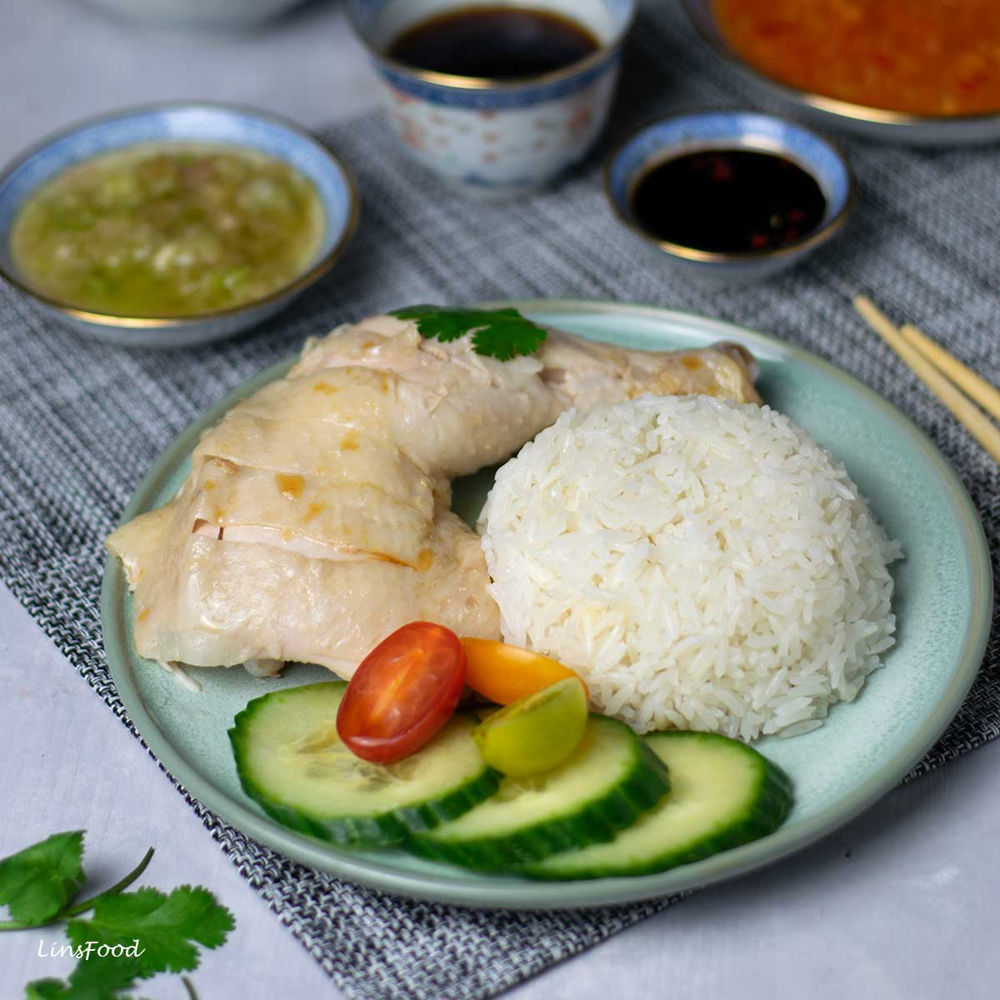

Food
Chicken Rice

Step
1 Cup rice
1 tsp minced garlic
1 tsp light soy sauce
1 cup chicken soup (From cooking the chicken)
Ingredient
1 inch Ginger, sliced in chuck
2-3 cloves garlic, lightly crushed
2 litres or enough to submerge chicken
| Calories |
Protein |
Fat |
| 607 |
25 |
23 |
Video about how to cooking rice chicken
Click here to go back to week 101